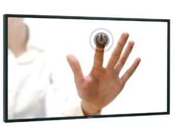
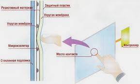
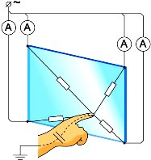
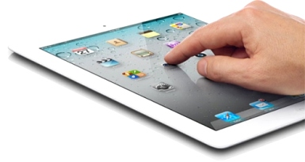

Сенсорный экран глазами пользователя.

В повседневной жизни все мы очень часто сталкиваемся с сенсорными экранами: терминалы пополнения счетов, банкоматы и т.д. Но самое массовое распространение эта технология получила при помощи мобильных телефонов.
Давайте попробуем разобраться, что же из себя представляет «тач-скрин» с точки зрения обычного пользователя, наприер из Гродно, тем более если вы собираетесь
купить компьютер в Гродно.
На сегодняшний день для производства сенсорных экранов используются следующие технологии:
резистивная
емкостная
индукционная
Резистивная технология
Экран, выполненный по этой технологии, представляет из себя ЖК(жидкокристаллическую) панель с закрепленными с двух сторон прозрачными пластинами, разделенными диэлектриком. При нажатии верхняя пластина прогибается и
соприкасается с нижней. Микроконтроллер регистрирует как изменилось сопротивление и преобразует его в координаты прикосновения.
К преимуществам технологии можно отнести низкую себестоимость,
неплохая чувствительность и то что вместо стилуса можно использовать любые предметы. Недостатки – быстрый износ и необходимость периодически калибровать устройство, плохая поддержка мультитача.

Емкостная технология
Есть два типа емкостных экранов: поверхостно – емкостные и проекционно-емкостные
Экран, выполненный по поверхостно – емкостной технологии – это стеклянная панель , покрытая специальным проводящим материалом. Специальными электродами на панель подается низковольтное напряжение. Когда вы касаетесь
пальцем такого экрана, происходит утечка тока и микроконтроллер высчитывает координаты точки касания. К плюсам таких экранов можно отнести большой ресурс ( около 200 млн.касаний), к минусам – устройства, оснащенные такими
экранами требовательны к температуре и не поддерживают мультитач.
Проекционно – емкостные
экраны работают по другой схеме. На внутренней стороне экрана находятся ряды электродов, на которые подается напряжение.
Котроллер измеряет амплитуду импульса тока. Как известно человек тоже может проводить электрический ток и иметь электрическую емкость.
При прикосновении пальцем к экрану емкость электродов, находящихся под ним, изменится. Микроконтроллер определяет, на каком электроде возросла емкость. Это и является координатой касания.

Индукционная технология
Сенсорные экраны современных планшетов работают по следующему принципу: под экраном расположена катушка индуктивности, которая формирует на его поверхности электромагнитное поле. В стилусе размещен резонансный контур.
Когда вы подносите стилус к экрану планшета, этот контур изменяет активность катушки индуктивности.
Микроконтроллер фиксирует это изменение. Дополнительные плюсы этой технологии – возможность рукописного ввода а также возможность рисовать на экране вашего планшета.
Мы с вами очень коротко рассмотрели достоинства и недостатки современных сенсорных экранов. Что нас ожидает завтра?
По мнению специалистов самые лучшие перспективы у емкостной технологии.

Читайте также:
Влияние монитора на зрение.
Как выбрать монитор.
Следующая статья:
Самостоятельная установка системы видеонаблюдения.